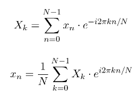
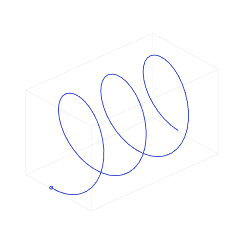
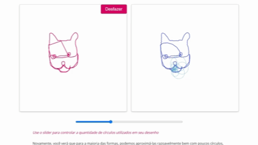

Transformadas de Fourier
13 de outubro de 2026
Em sala de aula e nos materiais de aula, foi passado conteúdo sobre as Transformadas de Fourier. Eu admito que matemática não é o meu forte, mas gosto de ler sobre, às vezes. Daí eu me deparei com aquela equação grande e esquisita e quase desisti.

Sério, o que significa isso? Até agora eu não sei, mas aqui vão algumas coisas que eu consegui aprender. Todas as referências que usei estarão no final da página.
Basicamente, é uma maneira de dividir alguma coisa em várias ondas senoidais. E o que é uma frequência? Uma onda que oscila devagar tem frequência baixa; uma que oscila rapidamente tem frequência alta. A Transformada de Fourier ajuda a descobrir quais frequências existem em um sinal e quanto de cada uma existe.
Quando usamos epiciclos para visualizar essas frequências, podemos imaginar cada componente como um ponto girando em um círculo. Cada círculo tem seu próprio tamanho, velocidade e posição inicial. Quando juntamos vários deles, o movimento da ponta final consegue formar desenhos bem complexos. E com isso, podemos fazer várias coisas legais.

Nesse site, tem uma parte legal pra você brincar com desenhos e ele recria sua obra de arte com esses círculos, se movendo um dentro do outro:

Eu fiz esse cachorro bugado (difícil desenhar no mouse!). Quanto mais círculos ele adiciona, mais fiel fica a imagem que eu desenhei, mas como dá pra ver, com menos da metade da barrinha o desenho já estava quase 100% fiel. Isso é bem útil para compressão, por exemplo, de imagens e sons.
Fourier também permite sair do domínio espacial (pixels e suas posições) para o domínio da frequência. Regiões de baixa frequência costumam representar mudanças suaves da imagem, enquanto frequências mais altas estão associadas a mudanças bruscas, como detalhes e bordas.
É bem estranho pensar que, de uma equação assustadora como aquela, podemos tirar tantas informações. Mas isso também é legal demais!